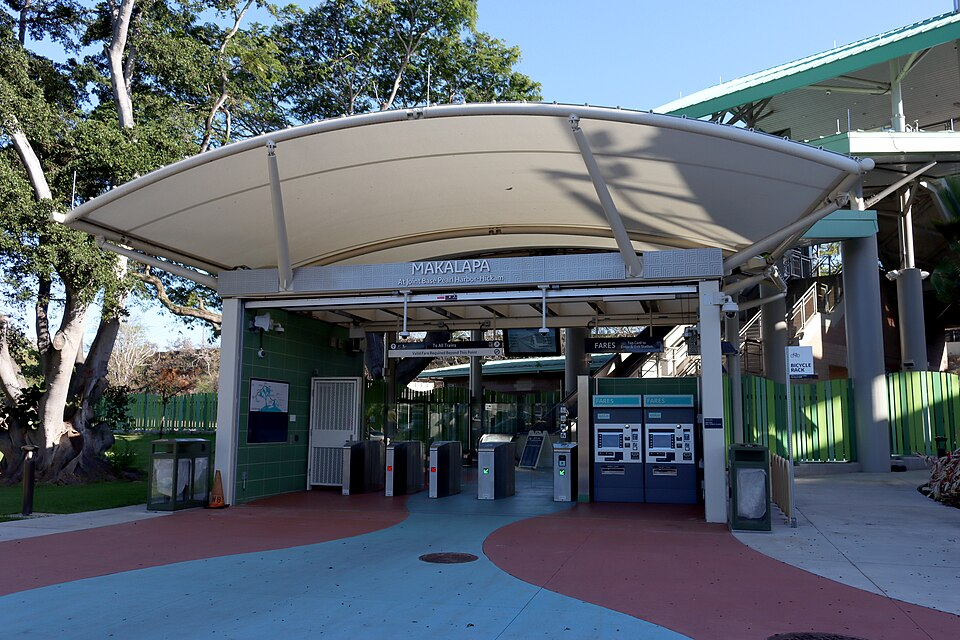

Makalapa Rail Station
Place: Makalapa Rail Station, Pearl Harbor, Oʻahu
Type: Skyline rail station / military transit station
Namesake: Makalapa (“ridge face” or “ridged features”), a former volcanic crater and fishpond near Puʻuloa (Pearl Harbor)
Story it tells: How a former volcanic crater and Hawaiian fishpond was filled with dredged material, converted into a wartime naval salvage yard, and incorporated into the military and suburban uses surrounding Pearl Harbor.

Makalapa Rail Station stands along Kamehameha Highway outside Joint Base Pearl Harbor-Hickam, surrounded by military facilities, schools, highways, and suburban development. The station takes its name from Makalapa, commonly translated as “ridge face” or “ridged features.” The name once described a much more obvious feature of the landscape: Makalapa Crater.
Makalapa Crater was a volcanic depression rising above the Hālawa flatlands near Puʻuloa (Pearl Harbor). Within the crater was a large body of fresh water that Native Hawaiians used as a fishpond. The surrounding lands formed part of the productive system of agriculture and aquaculture that once characterized the Puʻuloa region.
The pond was not isolated from the surrounding watershed. Overflow channels were engineered and built by Native Hawaiians, and carried excess water from the crater toward Hālawa Stream, helping regulate the pond while connecting Makalapa with the larger water system.
This area came under increasing pressure as the United States expanded Pearl Harbor during the early twentieth century. Deepening the harbor for large naval vessels produced enormous quantities of dredged coral, sediment, and other material.
In 1939, the federal government condemned the Makalapa Crater property through eminent domain. Portions of the land had belonged to the Queen Emma Estate and Bernice Pauahi Bishop Estate. The Navy acquired the crater as military expansion accelerated amid growing conflict in Asia and the outbreak of World War II in Europe.
Makalapa's deep basin, of approximately 200 feet, became a convenient place to dispose of material dredged from Pearl Harbor. The Navy pumped enormous quantities of dredged material into Makalapa, gradually filling the water that had occupied the crater. Its overflow drainage system was closed off, and a volcanic basin and fishpond that had existed for generations was converted into a disposal site.
Makalapa Crater was effectively erased from the landscape. Millions of cubic yards of material were placed inside it until the depression became filled ground. The ridge features that gave Makalapa its name blended into the surrounding area.
After the attack on Pearl Harbor on December 7, 1941, the mostly backfilled Makalapa acquired a related purpose. During World War II, it became a Navy salvage and disposal area. Damaged military equipment, aircraft components, ammunition debris, scrap metal, and material removed during the Pearl Harbor salvage operation were stored, burned, or buried in Makalapa.
The transformation continued after the war. What had once been a crater and fishpond now appeared to be a large area of flat, usable land beside Pearl Harbor. Portions of the former crater were eventually developed for public uses, including Radford High School and Makalapa Elementary School.
Building over filled ground, however, did not make the crater's history disappear. Decades of settling have created recurring problems in portions of the former disposal area. Construction and renovation projects have also encountered remnants of its military past, requiring precautions when disturbing soil that contains buried debris or contamination.
There is an uncomfortable irony in the modern landscape. A Hawaiian fishpond was filled to create a military disposal site, the disposal site was later treated as usable land, and schools were eventually built across portions of it. What looked like empty, flattened property was actually the accumulated remains of several radically different eras of Makalapa's history, all buried inside of that crater.
The wider Pearl Harbor corridor has continued to confront the consequences of generations of military and industrial activity. Modern construction requires considerably greater attention to contaminated soils, buried infrastructure, and unstable fill than existed when much of the area was first redeveloped. Even twenty-first-century projects such as Honolulu's rail system had to navigate considerably more complicated subsurface conditions.
Makalapa Rail Station opened in 2025 outside Joint Base Pearl Harbor-Hickam. Passengers now travel above a landscape where the original geographic feature responsible for the station's name has largely vanished from view.
That makes the name unusually revealing. Makalapa is not simply an older Hawaiian name applied to a new rail station. It preserves the memory of a physical place that was deliberately destroyed.
Makalapa remains on the map even though the crater that gave the area its identity has been filled and its contents tell our modern history.